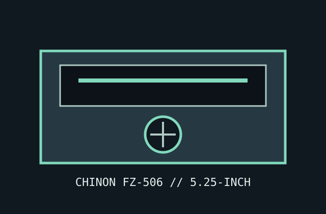

[ IDENTIFIED PC FLOPPY DRIVE ]
Chinon FZ-506 5.25-inch PC floppy drive
A 5.25-inch half-height, double-sided high-density mechanism. Verify the full nameplate and jumper block before wiring; suffixes and board revisions can differ.

Documented specifications
| Density / capacity | 5.25-inch, double-sided, 80-track/96-TPI HD mechanism; standard PC formats: 1.2 MB HD and 360 KB DD when media, drive speed, alignment, and controller mode agree. |
|---|---|
| Interface | 34-pin Shugart-compatible data/control edge connector; separate 4-pin +5 V/+12 V power connector. |
| Data rate / speed | 500 kbit/s HD and 250/300 kbit/s DD controller modes; 360 rpm HD and 300 rpm DD operation. Confirm mode/jumper behavior on the installed revision. |
| Jumpers / drive select | Board block includes DS0–DS3 selection and configuration options. Set one drive-select position to the PC cable/controller convention; termination belongs only at the cable end when fitted. |
| Dimensions / power | Approx. 146.1 × 41.3 × 203 mm half-height chassis; +5 V and +12 V rails, 4-pin Molex-style connector. Consult the FZ-506 specification for current limits of the exact revision. |
| PC controller compatibility | Suitable for an IBM PC/AT-compatible 765-family floppy controller configured for a 5.25-inch 1.2 MB drive; DD/360 KB operation depends on RPM, media, BIOS, and alignment. |
Preservation notes
Photograph the model label, jumper positions, resistor pack, and PCB markings before service. Check the drive belt, spindle behavior, head condition, and disk surface before testing; do not adjust alignment without the service procedure and a reference disk.
Manuals & archive sources
- Chinon FZ-506 specifications — Internet Archive scanModel-specific specification document with jumper and electrical/mechanical information.
- Chinon FZ-506 technical reference — archived PDFDirect archived technical document; check its configuration against the drive label.